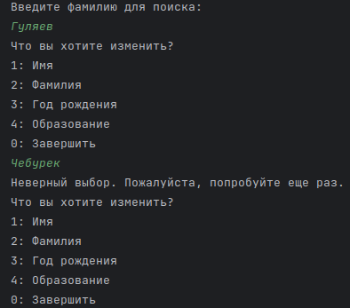
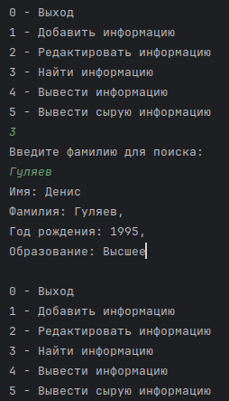

Инструкция по применению
Назначение программы
Данная программа предназначена для управления базой данных личных данных, включающей в себя информацию о различных людях. Программа позволяет пользователю добавлять новую информацию о человеке, включая его имя, фамилию, год рождения и уровень образования. Также предусмотрена функциональность для поиска, редактирования и вывода информации о конкретных лицах на основе фамилии. Возможности программы включают в себя:
- Добавление информации о человеке в базу данных.
- Редактирование существующей информации о человеке по фамилии.
- Поиск информации о человеке по фамилии.
- Вывод всей собранной информации о людях в удобном для чтения формате.
- Вывод сырых данных в формате JSON для дальнейшего анализа или обработки.
Программа предназначена для использования в качестве удобного инструмента управления информацией о людях, обеспечивая легкий доступ к данным и их модификацию. Программа может быть полезна в различных областях, где требуется хранение и обработка личных данных, таких как учебные заведения, научные исследования, учет персонала и другие сферы деятельности.
Условия выполнения программы
Для корректной работы программы необходимо обеспечить выполнение следующих условий:
-
Операционная система: Программа разработана для выполнения на операционных системах, поддерживающих Python, таких как Windows, Linux, macOS. Необходима поддержка выполнения Python-скриптов.
-
Интерпретатор Python: На компьютере должен быть установлен интерпретатор Python версии 3.x. Проверить наличие и версию Python можно, выполнив команду
python --versionилиpython3 --versionв командной строке или терминале. -
Дополнительные библиотеки: Для работы с JSON и обработки файлов необходимы стандартные библиотеки Python, входящие в стандартную поставку. Установка дополнительных внешних библиотек не требуется.
-
Доступ к файловой системе: Программа сохраняет данные в файле в формате JSON. Пользователь должен иметь права на чтение и запись файлов в директории выполнения программы или в указанном месте хранения файла данных.
-
Ввод данных пользователем: Программа предполагает интерактивный ввод данных пользователем через командную строку. Пользователь должен следовать инструкциям программы для ввода данных.
-
Соблюдение формата данных: При вводе информации пользователь должен соблюдать ожидаемые форматы данных (например, год рождения должен быть числом). Программа содержит проверки на корректность ввода, однако корректность и полнота введенных данных зависят от пользователя.
-
Обработка ошибок: В случае возникновения ошибок при чтении или записи файла данных, программа уведомит пользователя соответствующим сообщением. Пользователь должен обеспечить корректное разрешение возникших проблем (например, освободить место на диске или исправить права доступа к файлу).
Выполнение программы
Процесс выполнения программы включает в себя следующие шаги:
-
Запуск программы: Программа запускается через командную строку или терминал, используя интерпретатор Python. Для запуска необходимо выполнить команду
python имя_файла.py, гдеимя_файла.py— это название файла скрипта программы. -
Главное меню: После запуска пользователь встречается с главным меню, предлагающим следующие опции действий:
0 - Выход: Завершение работы программы.1 - Добавить информацию: Ввод данных о новом человеке и добавление их в базу данных.2 - Редактировать информацию: Редактирование данных о человеке по фамилии.3 - Найти информацию: Поиск информации о человеке по фамилии.4 - Вывести информацию: Вывод всей информации из базы данных в удобочитаемом формате.-
5 - Вывести сырую информацию: Вывод всей информации из базы данных в формате JSON. -
Выбор действия: Пользователь вводит номер действия из главного меню. Программа предоставляет соответствующие инструкции или интерфейс для выполнения выбранного действия.
-
Ввод и обработка данных: В зависимости от выбранного действия, программа запрашивает у пользователя необходимые данные через командную строку и выполняет соответствующие операции (добавление, редактирование, поиск, вывод данных).
-
Вывод результатов: Программа выводит результаты действий пользователя. Это может быть подтверждение успешного выполнения операции, вывод найденной информации, отображение всей базы данных или сообщение об ошибке.
-
Возврат в главное меню: После выполнения действия и вывода результатов программа предлагает пользователю вернуться в главное меню для выбора следующих действий.
-
Завершение работы программы: Если пользователь выбирает опцию выхода (
0 - Выход), программа завершает свою работу.
Сообщения оператору
Программа предусматривает вывод различных сообщений оператору, далее - пользователю, чтобы обеспечить эффективное взаимодействие и информирование о текущем состоянии выполнения программы. Ниже приведены основные типы сообщений, которые могут быть представлены пользователю в процессе работы программы:
-
Приветственное сообщение: При запуске программы пользователю отображается приветственное сообщение с кратким описанием назначения программы и предложением выбрать действие из главного меню.
-
Инструкции по выбору действия: Для каждого действия в главном меню пользователю предоставляются детальные инструкции о том, какие данные необходимо ввести для выполнения выбранного действия.
-
Подтверждение действий: После выполнения определенных операций (например, добавление, редактирование данных) программа выводит сообщения о успешном выполнении действия.
-
Ошибки ввода данных: Если пользователь вводит данные неверного формата или выбирает несуществующий пункт меню, программа выводит сообщение об ошибке и предлагает повторить ввод.
-
Сообщения о состоянии файла данных: В случае, если файл данных не найден, поврежден или пуст, программа информирует пользователя соответствующим сообщением и предлагает способы решения проблемы.
-
Результаты поиска: При поиске информации программа сообщает о результатах поиска, включая сообщение о том, найдена информация или нет.
-
Прощальное сообщение: При выборе опции выхода из программы пользователю выводится прощальное сообщение с благодарностью за использование программы.
-
Информационные сообщения: В процессе работы программы могут выводиться дополнительные информационные сообщения, касающиеся специфики выполнения операций, советы по использованию программы и прочая полезная информация.
-
Для начала работы откройте файл с кодом под названием
code.py, на него указывает стрелка под номером1, и нажмите на кнопку запуска кода, она указана стрелкой номер2Нажмите на картинку для увеличения -
На выбор вам предложат варианты действий, необходимо ввести соответсствующую цифру, от 0 до 5

Если вы введёте что-то кроме цифры от 0 до 5 то программа сообщит об этом и попросит повторить ввод

-
При выборе
0- Программа завершит работу

Так же вы можете завершить работу программы на любом этапе нажав на красный квадрат
 Нажмите на картинку для увеличения
Нажмите на картинку для увеличения
Добавление структуры
- При выборе
1- Программа начнёт заполнения новой структуры с данными о человеке. - Первое что попросит вас ввести
программа это -
Имя - Далее программа вас попросит ввести -
Фамилию - После вас попросит ввести
Год рождения(Желательно вводить в целочисленном формате, например -1999) - И в конце вас попросят ввести цифру от
1до4, которая соответствует образованию и после ввода вас вернёт в начальное меню выбора действий
Если вы введёте что то кроме цифры от 1 до 5 то программа сообщит что вы ввели неверное число и попросит попробовать ещё раз

Если вы где то допустили ошибку, вы можете отредактировать структуру. Смотри раздел - Редактирование структуры

Пример правильного ввода
Редактирование структуры
- При выборе
2- Вы можете отредактировать выбранную структуру, поиск нужной структуры происходит поФамилии - В начале вас попросят ввести
Фамилиюкоторая будет находится в структуре которую вы хотите отредактировать
Если структуры с данной Фамилией нет или вы ошиблись при вводе Фамилии, то программа сообщит что Фамилия не найдена и вернёт вас в основное меню выбора действий

- Далее программа вас попросит ввести цифру соответствующую полю которое необходимо изменить, от
1до4, в конце вы можете ввести0чтобы завершить редактирование
При вводе некорректных данных программа сообщит о не верном выборе и попросит вас повторить ввод
 - При любом допустимом выборе вас попросят ввести соответствующие данные, при изменении образования инструкции такие же
как и при добавлении структуры (Смотри - Добавление структуры - пункт 4)

Пример корректного ввода и изменения информации
Поиск информации
- При выборе
3- Вы можете найти структуру с необходимой вам фамилией - Здесь вас попросят ввести фамилию по которой будет производится поиск, после вывода программа выведет информацию
о человеке, а затем вернёт вас в начальное меню выбора действий

Пример корректного ввода данных
Если вы ввели Фамилию не правильно или данной Фамилии нет в списоке то прогармма сообщит что Фамилия не найдена и вернёт вас в основное меню выбора действий
Вывод всей информации
- При выборе
4- Программа выведет список всех структур которые находятся в файле и вернёт вас в начальное меню выбора действий картинка

Пример работы функции
Вывод всей информации в сыром виде
- При выборе
5- Программа выведет всё что написано в JSON файле без какой либо обработки

Пример работы функции